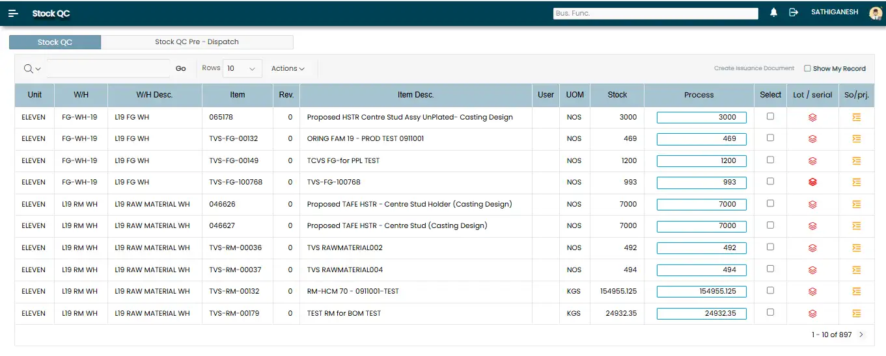
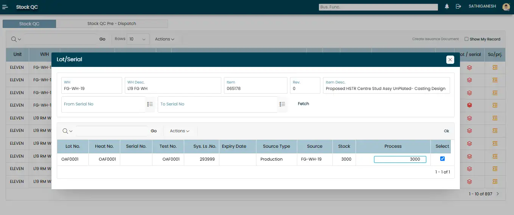
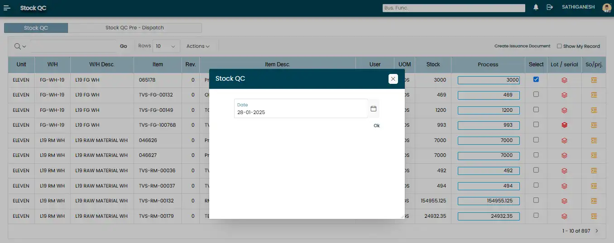
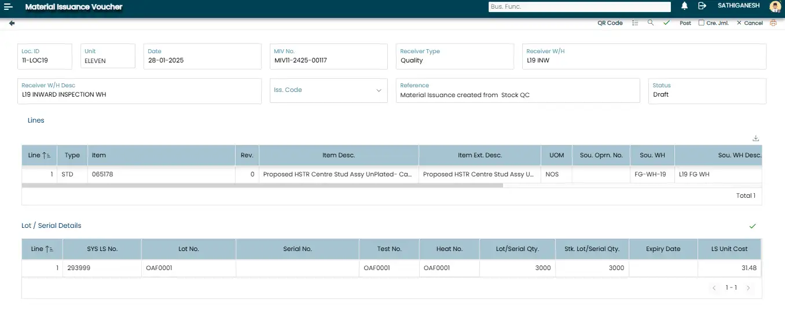

<div data-category="Inventory Control" data-title="Stock QC" data-updated="January 27, 2026" data-contributors="RoadmapIT" data-breadcrumb="Home,Inventory Control,Stock QC">
  <div class="page-content">
    <p>STOCK QC is a process that involves inspecting, testing, and verifying the quality and condition of the inventory items.</p>
    <p>This screen is used to check the QC for stored item. The stock QC created is of three types as follows.</p>
    <ul>
      <li>Internal Stock</li>
      <li>Customer</li>
      <li>Third Party</li>
    </ul>
    <h5>Navigation path:</h5>
    <p class="fs-6">Supply Chain Management \ Inventory \ Transaction \ Stock QC</p>
    
    <ul style="list-style-type: none; align-content: center">
      <li class="mouse-icon">Select the document</li>
      <li class="mouse-icon">Lot/Serial details will be shown in Lot/Serial dialog.</li>
      <li class="mouse-icon">Enter Process Quantity</li>
      <li class="mouse-icon">Check the select flag and Click ok</li>
    </ul>
    
    <ul style="list-style-type: none; align-content: center">
      <li class="mouse-icon">
        Press the Create issuance document
        <i class="bi bi-file-earmark-plus fs-5 mx-2 text-primary"></i>
        button to create the material issuance document.
      </li>
    </ul>
    
    <ul style="list-style-type: none; align-content: center">
      <li class="mouse-icon">Select Date and Click ok.</li>
      <li class="mouse-icon">The issuance document will be created</li>
      <li class="mouse-icon">While posting the material issuance document, the inspection document of corresponding types are created as explained below.</li>
    </ul>
    
    <ul style="list-style-type: none; align-content: center">
      <li class="mouse-icon">Material Issuance document is created from stock QC as shown above.</li>
      <li class="mouse-icon">Click on Post button to post the Material Issuance document.</li>
      <li class="mouse-icon">Check for the stock qty levels In the respective warehouses in the Stocks screen</li>
    </ul>
  </div>
</div>
